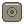
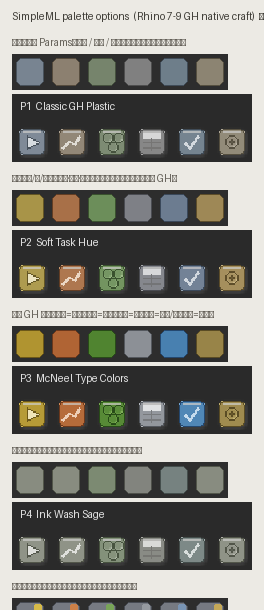
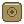

Classic GH Plastic
灰蓝 / 暖灰 / 橄榄，最像原生 Params。任务主要靠图形区分。

- 和 GH 工具栏最搭
- 长期耐看，教学/发布都稳
- 不靠高饱和也能认
当前插件图标不会被改动。下面 5 套配色都遵守设计手册： 24×24、2px 边距、软体积、同色描边、右下轻阴影、不用字母缩写。 请选一套后复制结果发给我。
| 尺寸 | 24 × 24 px · PNG RGBA · 透明底 |
|---|---|
| 内容区 | 中间 20 × 20，四周留 2 px 给阴影 |
| 阴影 | Blur ≈2px · 右下 1px · 黑约 25% |
| 颜色 | 每个图标（或同一族）1 个色系；避免高饱和霓虹 |
| 文字 | 尽量不要写 RF / Pred 等缩写（靠剪影识别） |
| 对比 | 软体积 + 柔和抗锯齿，贴近 GH 原生工具栏 |
docs/icon_style_proposals_gh.html + McNeel / David Rutten GH 图标工艺说明。
样本图标见下方（从本机 Grasshopper 抽出）。

总览板：每行 = 一套配色的色条 + 6 个示例图标（分类 / 回归 / 聚类 / 数据 / 帮助 / 智能）。
灰蓝 / 暖灰 / 橄榄，最像原生 Params。任务主要靠图形区分。

低饱和黄 / 橙 / 绿 = 分类 / 回归 / 聚类；工具灰蓝。语义最清晰。

对齐 GH 类型色：黄=数据、橙=曲面感、绿=数学、蓝=曲线、灰=参数。
近单色灰绿水墨。最隐身进工具栏；色弱友好。
统一冷灰底座，右上角小色标区分任务。家族感最强。